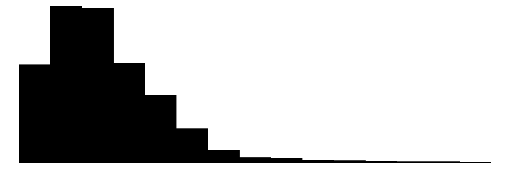
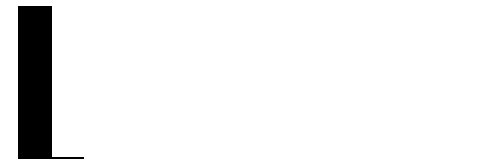
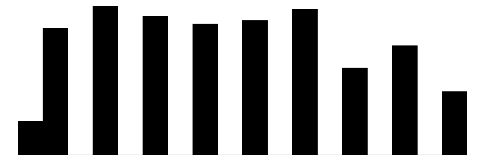
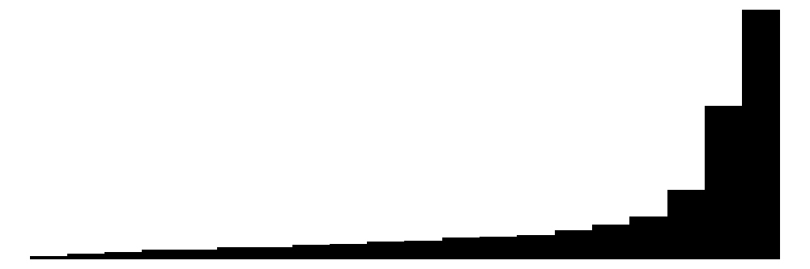
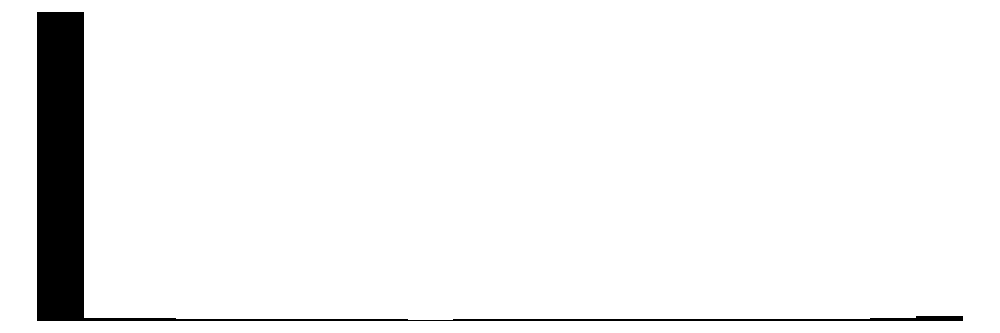
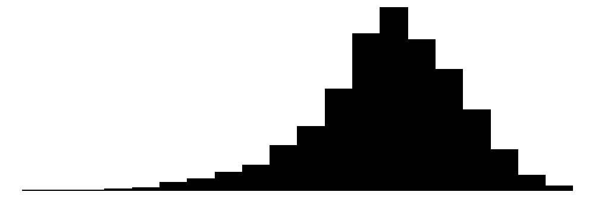
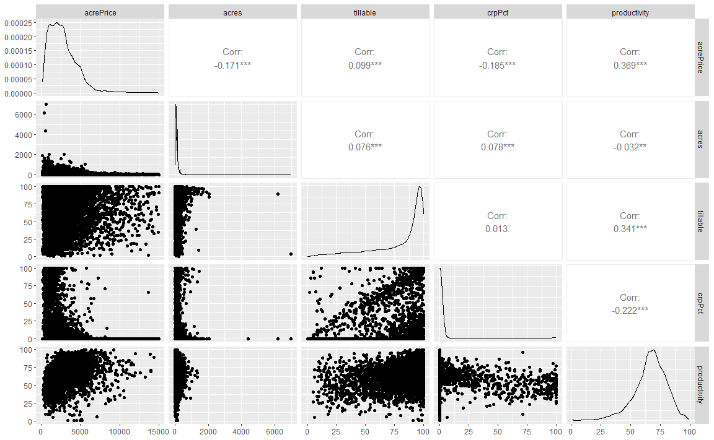
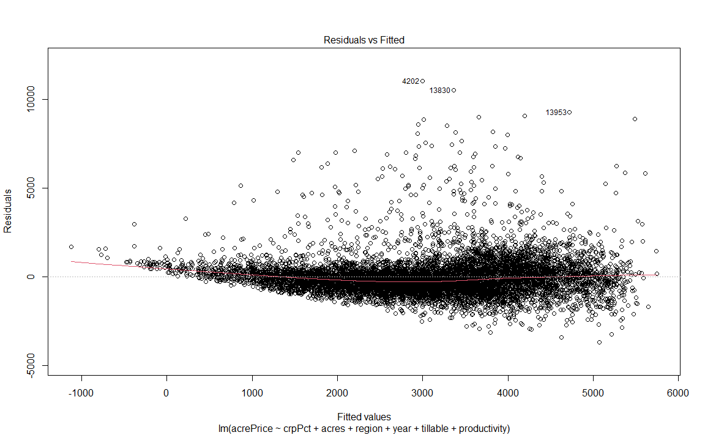
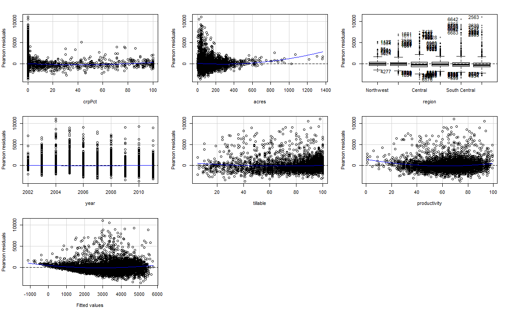
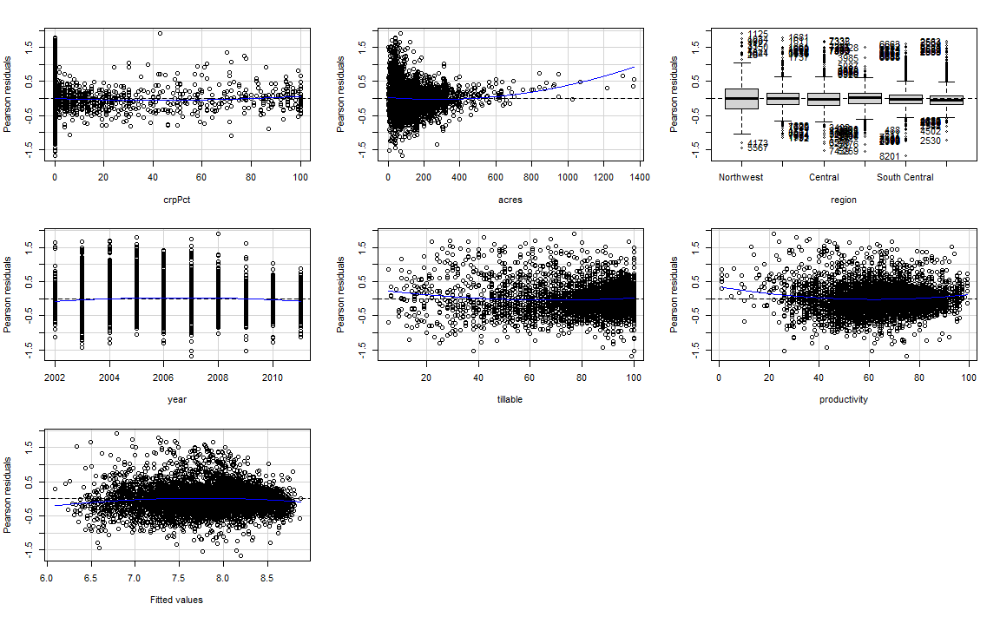

library(tidyverse)
library(alr4)
library(GGally)
library(parameters)
library(performance)
library(see)
library(car)
library(broom)
library(modelsummary)
library(texreg)
knitr::opts_chunk$set(
fig.align = "center",
fig.width = 12,
fig.asp = 0.618,
fig.retina = 1,
out.width = "100%",
message = FALSE,
echo = TRUE
)
my_gof <- function(fit_obj, digits = 4) {
sum_fit <- summary(fit_obj)
stars <-
pf(sum_fit$fstatistic[1],
sum_fit$fstatistic[2],
sum_fit$fstatistic[3],
lower.tail=FALSE) %>%
symnum(corr = FALSE, na = FALSE,
cutpoints = c(0, .001,.01,.05, 1),
symbols = c("***","**","*"," ")) %>%
as.character()
list(
# `R^2` = sum_fit$r.squared %>% round(digits),
# `Adj. R^2` = sum_fit$adj.r.squared %>% round(digits),
# `Num. obs.` = sum_fit$residuals %>% length(),
`Num. df` = sum_fit$df[[2]],
`F statistic` =
str_c(sum_fit$fstatistic[1] %>% round(digits), " ", stars)
)
}
# Function for screening many regressors
screen_many_regs <-
function(fit_obj_list, ..., digits = 4, single.row = TRUE) {
if (class(fit_obj_list) == "lm")
fit_obj_list <- list(fit_obj_list)
if (length(rlang::dots_list(...)) > 0)
fit_obj_list <- fit_obj_list %>% append(rlang::dots_list(...))
# browser()
fit_obj_list %>%
screenreg(
custom.note =
map2_chr(., seq_along(.), ~ {
str_c("Model ", .y, " ", as.character(.x$call)[[2]])
}) %>%
c("*** p < 0.001; ** p < 0.01; * p < 0.05", .) %>%
str_c(collapse = "\n") ,
digits = digits,
single.row = single.row,
custom.gof.rows =
map(., ~my_gof(.x, digits)) %>%
transpose() %>%
map(unlist),
reorder.gof = c(3, 4, 5, 1, 2)
)
}AE04-02 Multiple Linear Regression: Hedonic Prices
Setup
Goals:
- Get a brief introduction to the Hedonic Prices model;
- Practice fitting linear regression in R;
- Test linearity assumption: visually and using a statistical tests;
- Practice linear transformation;
- Exerciser coefficients interpretation;
Exercise
Data loading
dta <-
alr4::MinnLand %>%
as_tibble() %>%
# filter(year == 2007) %>%
select(acrePrice, acres, region, year,
tillable, crpPct, productivity)Glimpse at the data:
# _______(dta)Summary Statistics
This is a simple short-cut to the summary statistics.
library(modelsummary)
#dta %>% datasummary_skim()Do yourself at home!
In the code chunk below, adopt the R code used to prepare data summary manually. Run it step by step and comment on what it does between each component of the pipe.
# dta %>%
# _______(id = _______()) %>%
# _______(
# cols = c(acrePrice, acres, year, tillable, crpPct, productivity),
# names_to = "var",
# values_to = "val"
# ) %>%
# _______(var) %>%
# _______(_______(
# c(val),
# _______(
# mean = ~ mean(.x, na.rm = TRUE),
# sd = ~ sd(.x, na.rm = TRUE),
# meadian = ~ median(.x, na.rm = TRUE),
# n_miss = ~ sum(is.na(.x), na.rm = TRUE),
# min = ~ min(.x, na.rm = TRUE),
# max = ~ max(.x, na.rm = TRUE)
# )
# ),
# n = n())Visual inspection
We reply on the visual inspection of data to build some prior expectations. We will use function ggpairs() from GGally. Insert function name where appropriate:
library(GGally)
# dta %>%
# select(acrePrice, acres, tillable,
# crpPct, productivity) %>%
# ________()Regression 1
Let us fit the basic regression and summarize the results.
# fit1 <- lm(
# acrePrice ~ _____ + _____ + _____ + _____ + ____ + _____,
# data = dta
# )
# summary(fit1)Use performance and parameters package to summarize the regression results.
- Provide object with the fitted regression;
library(parameters)
library(performance)
# parameters(_____)
# performance(_____)Linearity: visual inspection
We can use built-in function for plotting residuals vs fitted.
- Provide object with the fitted regression;
# plot(_____, which = 1)We can also rely on the performance package:
library(see)
# check_model(_____, check = "linearity", panel = FALSE)What do you conclude about the linearity assumption based on these results?
Linearity: statistical test
What does the residualPlots() test and plots show us?
library(car)
# residualPlots(_____)What we conclude based on this linearity test?
Regression 2
Let us transform the dependent variable with a logarithm!
# fit2 <- lm(
# log(acrePrice) ~ _______________,
# data = _____
# )
# summary(_____________)Regressions comparison
Let us compare regression 1 and 2 using function screen_many_regs.
# screen_many_regs(_______, fit2)Linearity assumption
Is the linearity assumption fulfilled now?
# residualPlots(___________)Solutions
Code
dta <-
alr4::MinnLand %>%
as_tibble() %>%
# filter(year == 2007) %>%
select(acrePrice, acres, region, year,
tillable, crpPct, productivity)
glimpse(dta)Rows: 18,700
Columns: 7
$ acrePrice <dbl> 766, 733, 850, 975, 886, 992, 623, 1382, 855, 364, 807, 4…
$ acres <int> 82, 30, 150, 160, 90, 120, 170, 100, 120, 160, 158, 83, 1…
$ region <fct> Northwest, Northwest, Northwest, Northwest, Northwest, No…
$ year <dbl> 2002, 2003, 2002, 2003, 2002, 2003, 2003, 2003, 2003, 200…
$ tillable <dbl> 94, 63, 47, 86, NA, 83, 42, 35, 46, 10, 29, 36, 14, 71, 9…
$ crpPct <dbl> 0, 0, 0, 0, 0, 0, 0, 0, 0, 0, 0, 0, 0, 0, 0, 0, 0, 0, 0, …
$ productivity <int> NA, NA, NA, NA, NA, NA, NA, NA, NA, NA, NA, NA, NA, NA, N…Code
# Summary statistics:
dta %>%
mutate(id = row_number()) %>%
pivot_longer(
cols = c(acrePrice, acres, year, tillable, crpPct, productivity),
names_to = "var",
values_to = "val"
) %>%
group_by(var) %>%
summarise(across(
c(val),
list(
mean = ~ mean(.x, na.rm = TRUE),
sd = ~ sd(.x, na.rm = TRUE),
meadian = ~ median(.x, na.rm = TRUE),
n_miss = ~ sum(is.na(.x), na.rm = TRUE),
min = ~ min(.x, na.rm = TRUE),
max = ~ max(.x, na.rm = TRUE)
)
),
n = n())# A tibble: 6 × 8
var val_mean val_sd val_meadian val_n_miss val_min val_max n
<chr> <dbl> <dbl> <dbl> <int> <dbl> <dbl> <int>
1 acrePrice 2787. 1914. 2442 0 108 15000 18700
2 acres 113. 128. 80 0 1 6970 18700
3 crpPct 4.16 17.2 0 0 0 100 18700
4 productivity 66.6 13.5 68 9717 1 99 18700
5 tillable 80.7 22.8 92 1212 0 100 18700
6 year 2006. 2.51 2006 0 2002 2011 18700Code
# Summary statistics lazy
dta %>% datasummary_skim(output = "markdown")| Unique | Missing Pct. | Mean | SD | Min | Median | Max | Histogram | |
|---|---|---|---|---|---|---|---|---|
| acrePrice | 5696 | 0 | 2787.3 | 1914.0 | 108.0 | 2442.0 | 15000.0 |  |
| acres | 596 | 0 | 112.7 | 128.5 | 1.0 | 80.0 | 6970.0 |  |
| year | 10 | 0 | 2006.4 | 2.5 | 2002.0 | 2006.0 | 2011.0 |  |
| tillable | 102 | 6 | 80.7 | 22.8 | 0.0 | 92.0 | 100.0 |  |
| crpPct | 101 | 0 | 4.2 | 17.2 | 0.0 | 0.0 | 100.0 |  |
| productivity | 96 | 52 | 66.6 | 13.5 | 1.0 | 68.0 | 99.0 |  |
| region | N | % | ||||||
| Northwest | 3799 | 20.3 | ||||||
| West Central | 3297 | 17.6 | ||||||
| Central | 4198 | 22.4 | ||||||
| South West | 2583 | 13.8 | ||||||
| South Central | 2832 | 15.1 | ||||||
| South East | 1991 | 10.6 |
Code
# Visual data inspection
dta %>%
select(acrePrice, acres, tillable,
crpPct, productivity) %>%
ggpairs()Warning: Removed 1212 rows containing missing valuesWarning: Removed 9717 rows containing missing valuesWarning: Removed 1212 rows containing missing valuesWarning: Removed 9717 rows containing missing valuesWarning: Removed 1212 rows containing missing values or values outside the scale range
(`geom_point()`).
Removed 1212 rows containing missing values or values outside the scale range
(`geom_point()`).Warning: Removed 1212 rows containing non-finite outside the scale range
(`stat_density()`).Warning: Removed 1212 rows containing missing valuesWarning: Removed 9913 rows containing missing valuesWarning: Removed 1212 rows containing missing values or values outside the scale range
(`geom_point()`).Warning: Removed 9717 rows containing missing valuesWarning: Removed 9717 rows containing missing values or values outside the scale range
(`geom_point()`).
Removed 9717 rows containing missing values or values outside the scale range
(`geom_point()`).Warning: Removed 9913 rows containing missing values or values outside the scale range
(`geom_point()`).Warning: Removed 9717 rows containing missing values or values outside the scale range
(`geom_point()`).Warning: Removed 9717 rows containing non-finite outside the scale range
(`stat_density()`).
Code
# Regression
fit1 <- lm(
acrePrice ~ crpPct + acres + region +
year + tillable + productivity,
data = dta
)
summary(fit1)
Call:
lm(formula = acrePrice ~ crpPct + acres + region + year + tillable +
productivity, data = dta)
Residuals:
Min 1Q Median 3Q Max
-3663.2 -572.0 -132.8 356.3 11029.3
Coefficients:
Estimate Std. Error t value Pr(>|t|)
(Intercept) -6.476e+05 9.554e+03 -67.781 <2e-16 ***
crpPct -8.288e+00 8.693e-01 -9.534 <2e-16 ***
acres -1.166e+00 1.337e-01 -8.720 <2e-16 ***
regionWest Central 9.474e+02 4.703e+01 20.145 <2e-16 ***
regionCentral 1.798e+03 5.234e+01 34.357 <2e-16 ***
regionSouth West 1.257e+03 4.727e+01 26.595 <2e-16 ***
regionSouth Central 1.669e+03 5.070e+01 32.923 <2e-16 ***
regionSouth East 1.939e+03 5.875e+01 33.002 <2e-16 ***
year 3.230e+02 4.764e+00 67.792 <2e-16 ***
tillable -2.502e+00 7.881e-01 -3.175 0.0015 **
productivity 2.445e+01 1.078e+00 22.686 <2e-16 ***
---
Signif. codes: 0 '***' 0.001 '**' 0.01 '*' 0.05 '.' 0.1 ' ' 1
Residual standard error: 1079 on 8776 degrees of freedom
(9913 observations deleted due to missingness)
Multiple R-squared: 0.5179, Adjusted R-squared: 0.5174
F-statistic: 942.8 on 10 and 8776 DF, p-value: < 2.2e-16Code
# Linearity
plot(fit1, which = 1)
Code
# Linearity 2
residualPlots(fit1)
Test stat Pr(>|Test stat|)
crpPct 3.8991 9.727e-05 ***
acres 7.0230 2.334e-12 ***
region
year 2.0206 0.04335 *
tillable 4.9822 6.407e-07 ***
productivity 11.1526 < 2.2e-16 ***
Tukey test 11.0991 < 2.2e-16 ***
---
Signif. codes: 0 '***' 0.001 '**' 0.01 '*' 0.05 '.' 0.1 ' ' 1Code
# Regression 2
fit2 <- lm(
log(acrePrice) ~ crpPct + acres + region +
year + tillable + productivity,
data = dta
)
summary(fit2)
Call:
lm(formula = log(acrePrice) ~ crpPct + acres + region + year +
tillable + productivity, data = dta)
Residuals:
Min 1Q Median 3Q Max
-1.67550 -0.16876 -0.00636 0.15205 1.90913
Coefficients:
Estimate Std. Error t value Pr(>|t|)
(Intercept) -2.260e+02 2.830e+00 -79.831 < 2e-16 ***
crpPct -3.855e-03 2.575e-04 -14.969 < 2e-16 ***
acres -3.289e-04 3.960e-05 -8.304 < 2e-16 ***
regionWest Central 6.097e-01 1.393e-02 43.762 < 2e-16 ***
regionCentral 8.912e-01 1.551e-02 57.476 < 2e-16 ***
regionSouth West 7.029e-01 1.400e-02 50.189 < 2e-16 ***
regionSouth Central 8.319e-01 1.502e-02 55.386 < 2e-16 ***
regionSouth East 9.116e-01 1.741e-02 52.373 < 2e-16 ***
year 1.159e-01 1.411e-03 82.080 < 2e-16 ***
tillable 1.346e-03 2.335e-04 5.763 8.53e-09 ***
productivity 9.277e-03 3.192e-04 29.060 < 2e-16 ***
---
Signif. codes: 0 '***' 0.001 '**' 0.01 '*' 0.05 '.' 0.1 ' ' 1
Residual standard error: 0.3197 on 8776 degrees of freedom
(9913 observations deleted due to missingness)
Multiple R-squared: 0.6629, Adjusted R-squared: 0.6625
F-statistic: 1726 on 10 and 8776 DF, p-value: < 2.2e-16Code
# Comparing regressions
screen_many_regs(fit1, fit2)
=========================================================================
Model 1 Model 2
-------------------------------------------------------------------------
(Intercept) -647558.9077 (9553.7117) *** -225.9569 (2.8305) ***
crpPct -8.2879 (0.8693) *** -0.0039 (0.0003) ***
acres -1.1657 (0.1337) *** -0.0003 (0.0000) ***
regionWest Central 947.3789 (47.0272) *** 0.6097 (0.0139) ***
regionCentral 1798.2119 (52.3396) *** 0.8912 (0.0155) ***
regionSouth West 1257.1676 (47.2705) *** 0.7029 (0.0140) ***
regionSouth Central 1669.1223 (50.6976) *** 0.8319 (0.0150) ***
regionSouth East 1938.8725 (58.7507) *** 0.9116 (0.0174) ***
year 322.9656 (4.7641) *** 0.1159 (0.0014) ***
tillable -2.5024 (0.7881) ** 0.0013 (0.0002) ***
productivity 24.4465 (1.0776) *** 0.0093 (0.0003) ***
-------------------------------------------------------------------------
R^2 0.5179 0.6629
Adj. R^2 0.5174 0.6625
Num. obs. 8787 8787
Num. df 8776 8776
F statistic 942.7841 *** 1725.9608 ***
=========================================================================
*** p < 0.001; ** p < 0.01; * p < 0.05
Model 1 acrePrice ~ crpPct + acres + region + year + tillable + productivity
Model 2 log(acrePrice) ~ crpPct + acres + region + year + tillable + productivityCode
# Comparing regressions
residualPlots(fit2)
Test stat Pr(>|Test stat|)
crpPct 2.9704 0.002983 **
acres 7.7681 8.865e-15 ***
region
year -9.4012 < 2.2e-16 ***
tillable 7.3151 2.799e-13 ***
productivity 8.8189 < 2.2e-16 ***
Tukey test -8.5399 < 2.2e-16 ***
---
Signif. codes: 0 '***' 0.001 '**' 0.01 '*' 0.05 '.' 0.1 ' ' 1